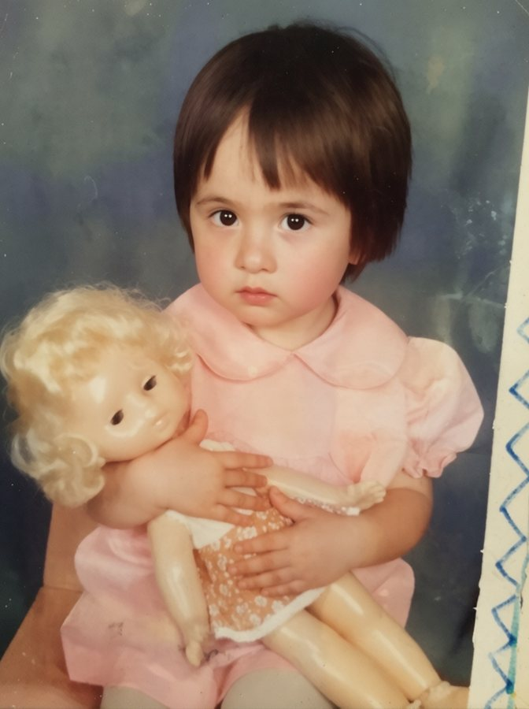

аналитик данных · исследователь · писатель
Я строю полезные модели и объясняю значение цифр
Прикладная математика, опыт в регуляторном compliance и писательский слух. Мой независимый анализ выясняет, насколько надёжны заработки по специальности во время перемен, когда ИИ меняет сам рынок труда.

ноябрь 2026
независимый анализ · с ноября 2026
Насколько надёжны заработки?
Большинство рейтингов «лучших специальностей» отвечают на вопрос: как хорошо я буду зарабатывать по этой специальности? Я задала второй вопрос: насколько надёжна и долгосрочна перспектива такого заработка в Нью-Йорке? Проект прослеживает 179 программ бакалавриата штата Нью-Йорк до профессий, в которых соответственно работают выпускники, и опирается только на публично доступные данные.
0.26
насколько связаны зарплата и надёжность. высокая зарплата не страховка
17 из 21
групп профессий, где официальные прогнозы недооценили рост. выбрать специальность = сделать ставку на прогноз
1 из 3
компаний в США уже используют ИИ. в некоторых самых высокооплачиваемых специальностях работодатели ещё не догнали
доска улик · что показали данные
Кто приземлится мягко, когда придёт ИИ?
специальности Нью-Йорка, прослеженные до профессий, к которым они ведут, до выходов из этих профессий и до людей, которые в них работают
ИИ не смотрит на вашу зарплату
и самые высокооплачиваемые, и самые низкооплачиваемые специальности могут оказаться под одинаковым давлением ИИ
С математикой можно уйти. С кодом пока нет
диплом математика открывает около 18 дверей в работу с похожей зарплатой. информатика: меньше одной, которая не под тем же давлением ИИ
16% рабочих мест Нью-Йорка: жёсткая посадка
старшие по возрасту работники, мало выходов, сильное давление ИИ, всё сразу. это офисные клерки, секретари, счетоводы, бухгалтеры
Прогнозы не смогли упорядочить специальности
официальные прогнозы роста, сделанные 10 лет назад, не смогли точно расставить специальности по востребованности: вышло не лучше, чем наугад
Где твёрдая почва, там больше дверей
у специальностей с надёжными профессиями обычно и выходов больше. медицина: около 36
Одна специальность, разная подушка
престижные вузы: около +18% к зарплате по той же специальности. коммерческие: около −18%. выпускники SUNY и CUNY стоят на самой твёрдой почве
Вузы следят за набором, а не за ИИ
программы в специальностях под сильнейшим давлением ИИ не закрываются быстрее. пока
27 дверей управляющего
навыки управляющего отелем ведут в десятки других управленческих профессий. переучиваясь на программиста, можно пройти мимо них к самой переполненной двери
красная нить: где больно зелёная нить: где есть выход тенденции, а не прогнозы
сделано на Python по открытым данным: Министерство образования США, BLS, Министерство труда штата Нью-Йорк, IPEDS, Бюро переписи США
раньше: сколько зарабатывает специальность? сколько стоит специальность в Нью-Йорке?
Во время стажировки в отделе институциональной эффективности Empire State University я воспроизвела для Нью-Йорка исследование The HEA Group «What Your Major is Worth», а также предложила и построила расширения: сравнение бакалавриата с магистратурой и сертификатами после бакалавриата и ориентиры заработков для выпускников старше 34 лет. Вопрос о надёжности возник по итогам этого анализа и проекта.
проза · в работе
The Wind Girl
мой первый роман, вдохновлённый реальной жизнью

я маленькая

степь недалеко от дома
Роман, рассказанный Ветром, написанный как дневник, прочувствованный как молитва
«Если вам покажется, что у героини ветер в голове, вы правы. Он там живёт. И знает её лучше, чем она сама»
🎵 звучание романа: Güldiyar Tanrıdağlı — Umutsuz Aşk
Ветер знает её с тех пор, как она маленькой девочкой танцевала вместе с отцом и подпевала ему по утрам. Ветер знал девочку, которая выбрала купить булочку вместо поездки домой на троллейбусе и шла через ночной город, радостная. Ветер знал уголок, где она пряталась с книгами, и вкус первой заграничной шоколадки после перестройки, которую делили на нескольких и помнили годами.
Ветер последовал за ней из степи в новую страну, где она растила дочь и с нуля заново строила карьеру, за океаном от своей семьи. И Ветер смотрел, как она любит мужчину, который всё мерил тем, чем владел... включая её. День за днём она приглушала себя, чтобы уместиться в его мир.
Но иногда по вечерам она всё ещё надевала наушники и танцевала перед зеркалом, просто для себя.
Это история о любви, которая греет, и любви, которая держит в клетке, и о тихом мужестве, которое нужно, чтобы уйти от мужчины, который хотел лишь втиснуть её в отведённую нишу. И это история матери и дочери, которые сталкиваются, как две звезды, и всё равно принадлежат одному небу.
Ветер здесь не только рассказчик, но и герой. Есть место без окон, где страхи говорят чужими голосами. Ветер не может туда войти. Ветер может только ждать, когда она откроет окно и сольётся со светом.
Страницы читаются как старая тетрадь, с фотографиями, почерком и строками, иногда залитыми слезами, иногда смехом. Казахский кюй, вера и язык степи проходят через современную историю любви и эмиграции.
Вдохновлено реальной жизнью. Не совсем голливудский счастливый конец, а путь назад к собственному свету.
© Wind Girl Novel
Я пишу на английском, русском и казахском. Моя проза отмечена стипендией Nicholas Pekearo Scholarship.
прочитать рассказThe Fur Hat (на английском) →советское детство, одна норковая шапка и семейный суд, который собирался за завтраком. рассказ, который помог мне получить стипендиюглава из The Wind Girl
О маме 🤍 →
забота, которая светила, как дыхание, и одеяло, которое она никогда не оставляла себе
глава из романа «Ветруша»
Папины утра ☀️ →
кто научил её, что любовь может быть радостной
глава из романа «Ветруша»
Карта и дорога 🗺️ →
мама, дочь и две звезды на одном небе
заметка · ноябрь 2026
Палата 27 🌙 →
безразличие, достоинство и одна ночь
заметка из работы над «Ветрушей»
Под стеклянным куполом 🌴 →
тёмная пятница и солнечная суббота под пальмами
следите за романом в Instagramцитата из книги
«Зрелость — это не отсутствие ошибок, а отсутствие отговорок»
— Салтанат Мейрамкызы, из книги «The Wind Girl»
литературная жизнь
Мой маленький праздник
иду на встречу с Борисом Акуниным!
заметки о городе
Нью-Йорк, 11 лет спустя →
что мне помогало и помогает. а дальше — стандарты, по которым я живу
статьи · заметки о жизни
Статьи
статья · ноябрь 2026
Профессионализму не нужно быть громким ✨ →
одно слово, каждая таблица и письмо, которое сделало мой день
статья · ноябрь 2026
За страхом →
самое прекрасное ждёт за страхом
статья
Как правильно себя упаковать →
образ, слова и присутствие
статья
Кино про собственную жизнь →
быть главной героиней в своём кадре
культура · кино, театр, книги
Культура
балет, которого я жду
Ромео и Джульетта 🩰
мой первый балет в Линкольн-центре: новая «Ромео и Джульетта» Алексея Ратманского в New York City Ballet
бродвейский вечер, которого я жду · весна 2027
Lost Lear 👑
Джессика Честейн в новой пьесе по мотивам «Короля Лира» · @lostlearplay
«Кто тот, кто скажет мне, кто я?»
— Шекспир, «Король Лир», акт I, сцена 4
сладкий момент · ноябрь 2026
Сладкий Хэллоуин 🎃 →
Snickers, 90-е в Казахстане и Хэллоуин в Нью-Йорке
поездка домой · октябрь 2026
Иссык: трагедия и золото 🏔️ →
бирюзовое озеро, сель 1963 года, две легенды и Золотой человек
сладкий момент · ноябрь 2026
Сладкое утро понедельника 🍫 →
шоколадный торт от доброй коллеги, чай с лимоном и мысли о «Щелкунчике»
кино · 14 ноября
Spoonful of Love →
фильм на армянском без субтитров и песня, которая теперь у меня на повторе
театр · 31 октября
Бред →
Хаматова и Бурковский на расстоянии вытянутой руки. этот спектакль не смотришь, его проживаешь
опера · 29 апреля 2025
Саломея в Мет →
премьера и платье, которое три года ждало своего момента
театр · 22 марта 2025
Dakar 2000 →
сюжет не захватил. захватило обаяние актёра
танец и театр · октябрь 2023
Два вечера в октябре →
стропа над сценой BAM и Daphne в Линкольн-центре
Бродвей · осень 2023
Мой день 🎂 →
день рождения только для себя: Serendipity, The Cottage и танец в проходе
танец · март 2025
MOMO, Batsheva →
Охад Нахарин в BAM. грань между «я» и «мы»
видео
скоро
чтения
Я организую чтения The Wind Girl и моих рассказов и буду выкладывать видео здесь. хотите провести чтение у себя или прийти? написать мне
Насколько надёжны заработки? обзор за 5 минут
что показывает индекс надёжности, а что нет
чтение из The Wind Girl
дата первого чтения будет объявлена
ложка меня
Ложка меня 🥄 →
кто я, чем занимаюсь днём и что делаю в свободное время
давайте поговорим
Результаты по отдельным специальностям, работа в аналитике, выступления или роман: напишите мне